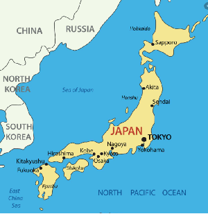

Tokyo

Home
Introdução
Localização|
Multimédia|
Informações|
Japão
A combinação de características naturais e dos fatores demográficos
fazem com que o Japão possua algumas das regiões mais habitadas do planeta, como a cidade
de Tóquio (capital do país), que é a única atualmente classificada como metápole.
Em Tóquio podemos observar diferentes estilos de vida como a cozinham, a paixao pelas artes marciais e até mesmo
a vida noturna na capital.
O Japão é um arquipélago situado no Oceano Pacífico e localizado no extremo leste do continente asiático